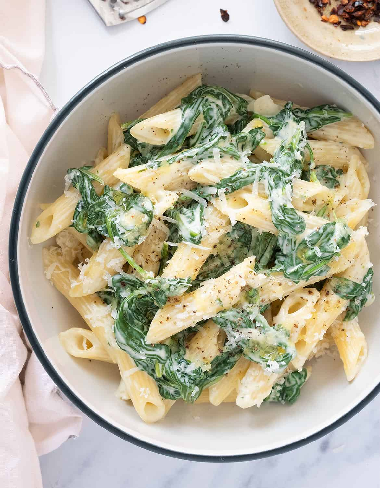

Home
Description

A one pot wonder that's creamy, flavorful, and
loaded with spinach—perfect for busy weeknights or a cozy solo supper
Ingredients
- 200 g dried penne or fusilli pasta
- 2 tbsp olive oil
- 3 garlic cloves, thinly sliced or minced
- 100 g (≈3 cups) fresh baby spinach
- 2 tbsp cream cheese
- 2 tbsp grated Parmesan
- Pinch of nutmeg (optional)
- Salt & freshly ground black pepper, to taste
Instructions
- Cook the pasta al dente according
to packet directions. Reserve about ½ cup pasta water, then drain.
- Sauté the garlic: In the same pot, warm olive oil
over medium heat. Add garlic and cook until fragrant (about 30 seconds).
- Wilt the spinach: Add spinach a handful at a time, stirring until it collapses.
- Make it creamy: Lower heat, stir in cream cheese and Parmesan.
Add a splash of pasta water to form a silky sauce.
- Season with salt, pepper, and a hint of nutmeg if using.
- Combine & serve: Return pasta to the pot and toss until evenly coated.
Plate immediately,
garnish with extra Parmesan and a drizzle of olive oil if desired
Whether you're cooking for one or feeding a family, this creamy spinach garlic pasta
is a foolproof go-to for fast, flavorful comfort. With just a few ingredients and
minimal cleanup, it proves that delicious doesn't have to mean complicated.
Give it a try tonight—you might just add it to your weekly rotation